1879
Narodenie v Ulme
Albert Einstein sa narodil 14. marca 1879 v nemeckom Ulme. Už od detstva prejavoval výnimočný záujem o matematiku, kompas a záhady prírody.
Začiatok génia
Prémiová moderná webstránka venovaná najväčšiemu géniovi histórie. Objav jeho život, revolučné myšlienky, fotoelektrický jav, fascinujúce objavy a odkaz, ktorý ovplyvnil celý vesmír vedy.

Objav fascinujúcu cestu génia cez najdôležitejšie momenty jeho života. Posúvaj sa vodorovne a sleduj, ako sa rodili myšlienky, ktoré navždy zmenili vedu.
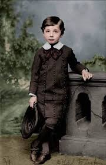
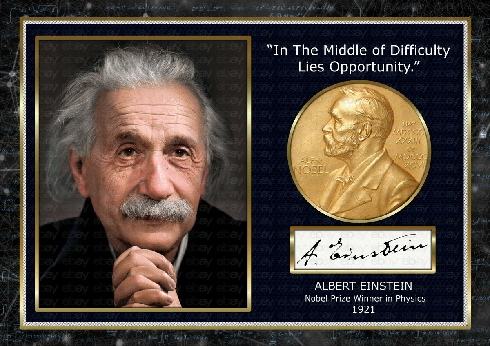
Albert Einstein sa narodil 14. marca 1879 v nemeckom Ulme. Už od detstva prejavoval výnimočný záujem o matematiku, kompas a záhady prírody.
Nastúpil na ETH Zürich, kde začal budovať základy svojho vedeckého myslenia a spoznal Milevu Marić.
Publikoval práce o fotoelektrickom jave, Brownovom pohybe, špeciálnej teórii relativity a slávnej rovnici E = mc².
Predstavil revolučný pohľad na gravitáciu a zakrivenie časopriestoru, čím úplne prepísal fyziku.
Získal Nobelovu cenu za vysvetlenie fotoelektrického javu, ktorý položil základy kvantovej fyziky.
Presťahoval sa do USA, kde pokračoval vo výskume a stal sa svetovým symbolom geniality.
Einstein zomrel v Princetone, no jeho teórie dodnes ovplyvňujú fyziku, vesmírny výskum aj technológie.
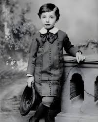
Albert Einstein sa narodil 14. marca 1879 v nemeckom meste Ulm do židovskej rodiny. Krátko po jeho narodení sa rodina presťahovala do Mníchova, kde jeho otec Hermann a strýko Jakob podnikali v elektrotechnike. Už od útleho veku bolo zrejmé, že Albert premýšľa inak než ostatné deti.
Ako malý chlapec bol tichý, uzavretý a veľmi pozorovací. Namiesto bežných detských hier ho fascinovali otázky o tom, ako funguje svet okolo neho. Zlomovým momentom bolo, keď mu otec ukázal jednoduchý kompas. Malý Albert bol ohromený tým, že ihla sa vždy otočila rovnakým smerom, aj keď sa jej nič viditeľné nedotýkalo. Tento moment v ňom vyvolal prvé hlboké otázky o neviditeľných silách prírody.
V škole nebol typickým vzorným žiakom. Nepáčil sa mu prísny memorovací systém, autoritatívni učitelia ani slepé opakovanie faktov. Oveľa viac ho priťahovalo samostatné rozmýšľanie. Matematiku a geometriu miloval natoľko, že už ako tínedžer študoval knihy určené pre vysokoškolákov.
V období dospievania sa rodina presťahovala do Talianska, no Albert zostal istý čas sám v Nemecku kvôli škole. Neskôr odišiel za rodinou a pokračoval v štúdiu vo Švajčiarsku, kde sa postupne formovala jeho slobodná a nekonvenčná myseľ.
Už v mladosti si kládol otázku, ktorá sa neskôr stala základom jeho revolučných teórií: „Čo by som videl, keby som cestoval spolu s lúčom svetla?“ Táto jednoduchá predstava sa stala jednou z najikonickejších myšlienok v dejinách fyziky.
Ulm, Nemecko
Matematika, kompas, geometria
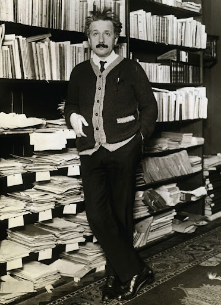
V roku 1896 nastúpil na prestížnu ETH Zürich, kde študoval matematiku a fyziku. Práve tu sa jeho talent začal rozvíjať naplno. Einstein bol známy tým, že často vynechával prednášky, no o to viac študoval samostatne a do hĺbky.
Počas štúdia spoznal Milevu Marić, talentovanú študentku fyziky, ktorá sa neskôr stala jeho manželkou. Spoločne diskutovali o vede, filozofii a fyzikálnych problémoch, čo ešte viac podporilo Einsteinovu tvorivú myseľ.
Po ukončení školy sa mu dlho nedarilo nájsť akademickú pozíciu, preto prijal miesto na patentovom úrade v Berne. Táto práca sa paradoxne stala ideálnym prostredím pre jeho vedecké premýšľanie. Každodenne analyzoval technické vynálezy, elektrické zariadenia a synchronizáciu času, čo neskôr výrazne ovplyvnilo jeho teóriu relativity.
Rok 1905 je dodnes označovaný ako jeho „Annus Mirabilis“ – zázračný rok. Počas jediného roka publikoval štyri vedecké práce, ktoré navždy zmenili modernú fyziku.
Vysvetlil Brownov pohyb, čím poskytol dôkaz existencie atómov, objasnil fotoelektrický jav, za ktorý neskôr získal Nobelovu cenu, predstavil špeciálnu teóriu relativity a svetu dal rovnicu E = mc², jednu z najslávnejších rovníc v histórii ľudstva.
Touto rovnicou ukázal, že hmota a energia sú dve podoby tej istej reality, čo spôsobilo revolúciu nielen vo fyzike, ale aj v chápaní samotného vesmíru.
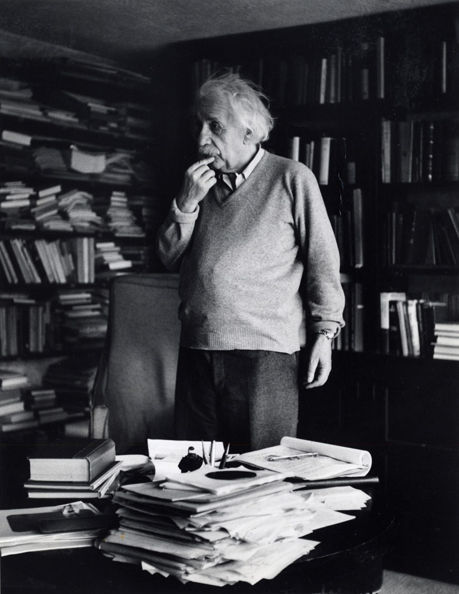
V roku 1933, po nástupe nacizmu v Nemecku, Einstein opustil Európu a odišiel do Spojených štátov amerických. Usadil sa v Princetone, kde pôsobil na Institute for Advanced Study. Tu sa stal nielen vedeckou legendou, ale aj symbolom inteligencie a humanizmu.
Posledné desaťročia života venoval snahe vytvoriť jednotnú teóriu poľa – elegantný matematický opis, ktorý by spojil gravitáciu, elektromagnetizmus a ostatné sily prírody do jednej teórie. Hoci sa mu tento cieľ nepodarilo úplne dosiahnuť, jeho práca položila základy pre moderné snahy o „teóriu všetkého“.
Einstein sa aktívne vyjadroval aj k spoločenským témam. Bol zástancom mieru, humanizmu a medzinárodnej spolupráce. Varoval pred nebezpečenstvom jadrových zbraní a zároveň zdôrazňoval morálnu zodpovednosť vedcov.
Zomrel 18. apríla 1955 v Princetone. Aj po smrti zostal jedným z najväčších symbolov geniality. Jeho teórie dnes ovplyvňujú modernú kozmológiu, GPS navigáciu, výskum čiernych dier, gravitačné vlny aj technológie budúcnosti.
Einsteinov životný príbeh je dôkazom, že skutočná genialita nevzniká len z vedomostí, ale predovšetkým z nekonečnej zvedavosti, predstavivosti a odvahy spochybniť zaužívané pravidlá.
Preskúmaj detailnú cestu Einsteinovej profesionálnej kariéry — od patentového úradu až po najväčšie fyzikálne teórie, ktoré navždy zmenili chápanie vesmíru.
Preskúmaj princíp fotoefektu, podmienky jeho vzniku, Einsteinovu rovnicu fotoelektrického javu a riešené príklady.
Svetlo podľa klasickej fyziky dlho považovali vedci iba za elektromagnetické vlnenie, ktoré prenáša energiu spojito. Experimenty na prelome 19. a 20. storočia však ukázali, že pri interakcii s látkou sa svetlo správa oveľa zvláštnejšie.
Einstein nadviazal na Planckovu myšlienku kvantovania energie a vyslovil revolučný predpoklad, že svetlo neprenáša energiu plynulo, ale v malých diskrétnych balíčkoch energie, ktoré nazývame fotóny.
Každý fotón nesie presne určenú energiu, ktorá závisí výlučne od frekvencie žiarenia. Čím je frekvencia svetla vyššia, tým väčšiu energiu má jeden fotón. Práve preto má napríklad ultrafialové žiarenie väčšiu schopnosť uvoľňovať elektróny z kovu než viditeľné alebo infračervené svetlo.
Energia jedného fotónu sa vyjadruje vzťahom:
kde h je Planckova konštanta a f je frekvencia žiarenia.
Fotoelektrický jav je jav, pri ktorom sa z povrchu kovu uvoľňujú elektróny pôsobením elektromagnetického žiarenia.
Aby elektrón mohol opustiť povrch kovu, energia fotónu musí byť aspoň rovná výstupnej práci kovu W.
Minimálna frekvencia potrebná na vznik javu sa nazýva prahová frekvencia.
Ak platí:
Klasická fyzika predpokladala, že silnejšie svetlo spôsobí väčšiu kinetickú energiu uvoľnených elektrónov. Experimenty však ukázali, že rozhoduje frekvencia svetla, nie intenzita.
Einstein preto povedal: jeden elektrón absorbuje energiu jedného fotónu.
Táto rovnica hovorí:
energia fotónu = energia potrebná na uvoľnenie elektrónu + jeho kinetická energia
Einstein vysvetlil fotoelektrický jav pomocou zákona zachovania energie. Energia jedného dopadajúceho fotónu sa rozdelí na:
Preto platí základná Einsteinova rovnica:
Keďže kinetická energia elektrónu je:
môžeme písať:
Po úprave dostávame konečný tvar:
Ak použijeme prahovú frekvenciu:
dostaneme ešte častejší školský tvar:
Každý kov má svoju minimálnu frekvenciu, pri ktorej elektróny začnú vylietavať. Táto frekvencia sa nazýva prahová (hraničná) frekvencia.
Ak je frekvencia menšia než f₀, elektróny sa neuvoľnia bez ohľadu na intenzitu svetla.
Namiesto frekvencie často používame medznú vlnovú dĺžku:
Tento všeobecný vzťah platí v základných SI jednotkách, kde λ je vo metroch, h je Planckova konštanta, c je rýchlosť svetla a W je výstupná práca v jouloch. Pri školských výpočtoch pre λ v nanometroch a W v eV sa často používa aj praktický tvar λ₀ = 1240 / W.
Tento jav dokázal, že svetlo sa správa aj ako častica, nielen ako vlnenie. Bol to jeden z najväčších dôkazov vzniku kvantovej fyziky.
Práve za toto vysvetlenie získal Einstein Nobelovu cenu.
Fotoelektrický jav sa dnes používa v:
Precvič si Einsteinovu rovnicu na praktických úlohách. Kliknutím zobrazíš výsledok aj kompletný postup riešenia.
Albert Einstein sa stal symbolom geniality. Jeho objavy mu priniesli Nobelovu cenu, vedecké medaily, čestné doktoráty a nesmrteľné miesto v dejinách ľudstva.
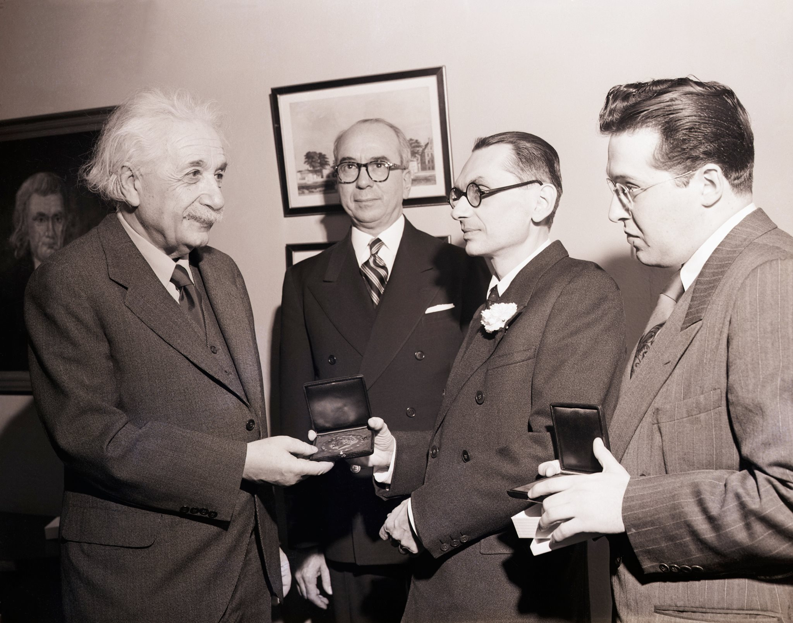
Tento historický moment zachytáva Alberta Einsteina pri preberaní Nobelovej ceny za fyziku, jedného z najprestížnejších vedeckých ocenení na svete. Einsteinovi bola Nobelova cena za fyziku udelená za rok 1921 za objav zákona fotoelektrického javu, no fyzicky ju prevzal až v roku 1922. Hoci si ho dnes väčšina ľudí spája najmä s teóriou relativity a slávnou rovnicou E = mc², Nobelovu cenu získal za svoje revolučné vysvetlenie fotoelektrického javu.
Einstein ukázal, že svetlo sa pri fotoelektrickom jave správa ako tok kvánt energie, ktoré dnes nazývame fotóny, pričom energia každého fotónu závisí od jeho frekvencie. Tento prelomový objav úplne zmenil dovtedajšie chápanie svetla a stal sa jedným zo základných pilierov modernej kvantovej fyziky.
Význam tohto objavu siaha ďaleko za hranice teórie. Princípy fotoelektrického javu dnes využívame v solárnych paneloch, svetelných senzoroch, digitálnych fotoaparátoch, CCD snímačoch, laserových technológiách aj polovodičovej elektronike. Nobelova cena tak neocenila iba jeden vedecký článok, ale objav, ktorý zásadne ovplyvnil technologický vývoj celého 20. a 21. storočia.
Táto fotografia zároveň symbolizuje chvíľu, keď sa Einstein definitívne stal svetovou vedeckou ikonou a synonymom geniality. Jeho meno odvtedy navždy patrí medzi najväčšie osobnosti dejín ľudskej vedy.
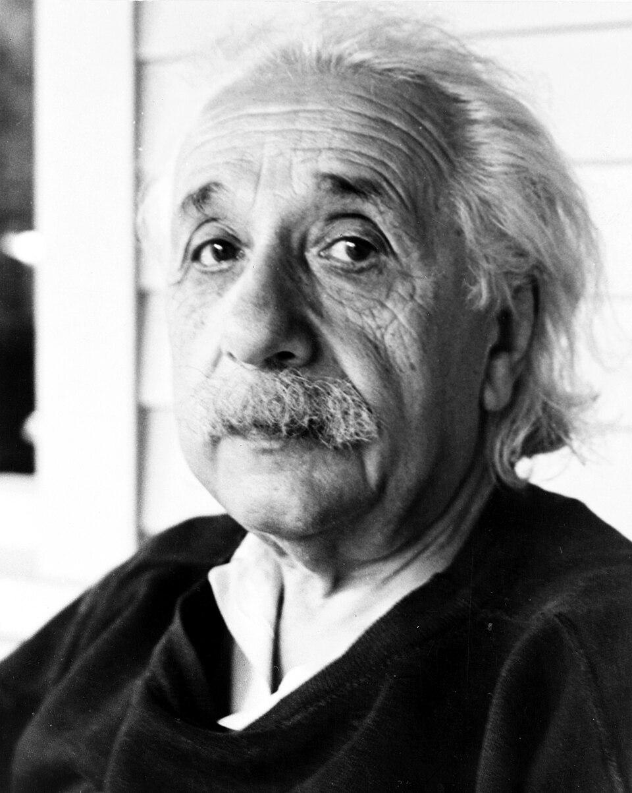
Jedno z najstarších vedeckých ocenení udeľované Royal Society za mimoriadny prínos vede.
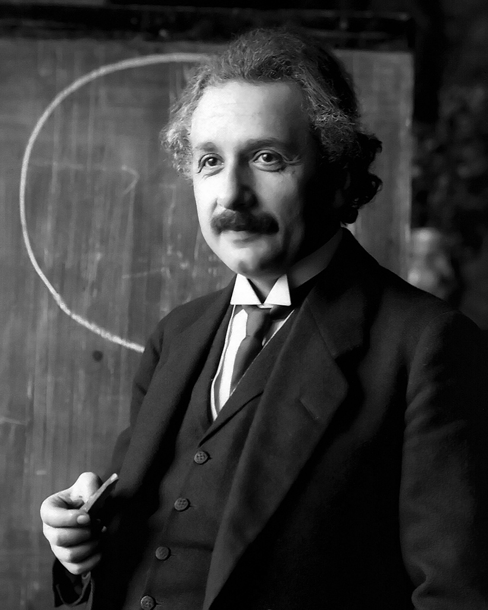
Ocenenie za výnimočný prínos teoretickej fyzike a rozvoj modernej kozmológie.
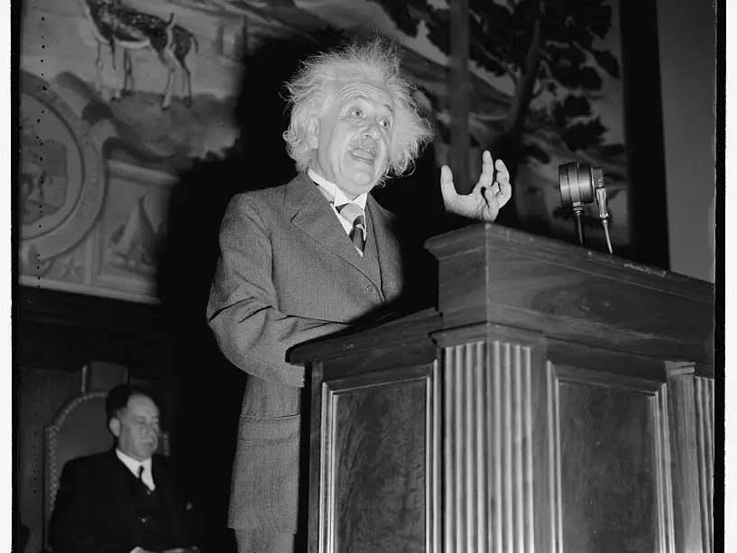
Einsteinovo meno dnes nesú školy, observatóriá, vedecké ceny, sondy aj samotné fyzikálne princípy.
Klikaj na interaktívne karty a odhaľuj fascinujúce fakty.
Exkluzívna vizuálna galéria zachytávajúca najikonickejšie momenty života Alberta Einsteina — od detstva, cez vedecké objavy, až po jeho nesmrteľný vedecký odkaz.
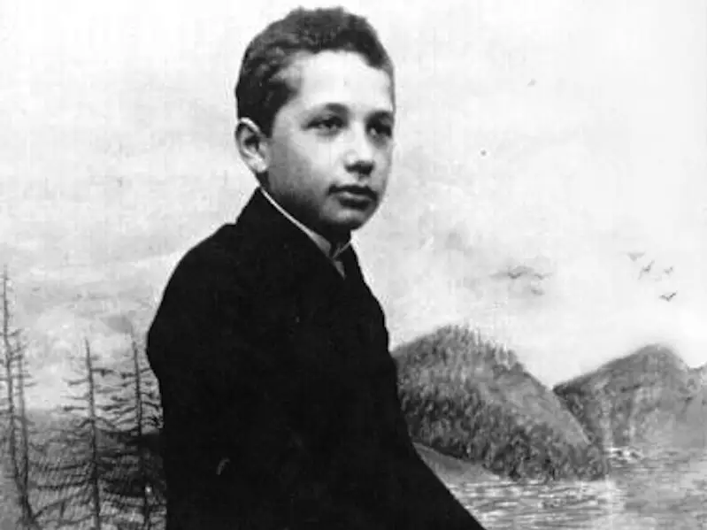

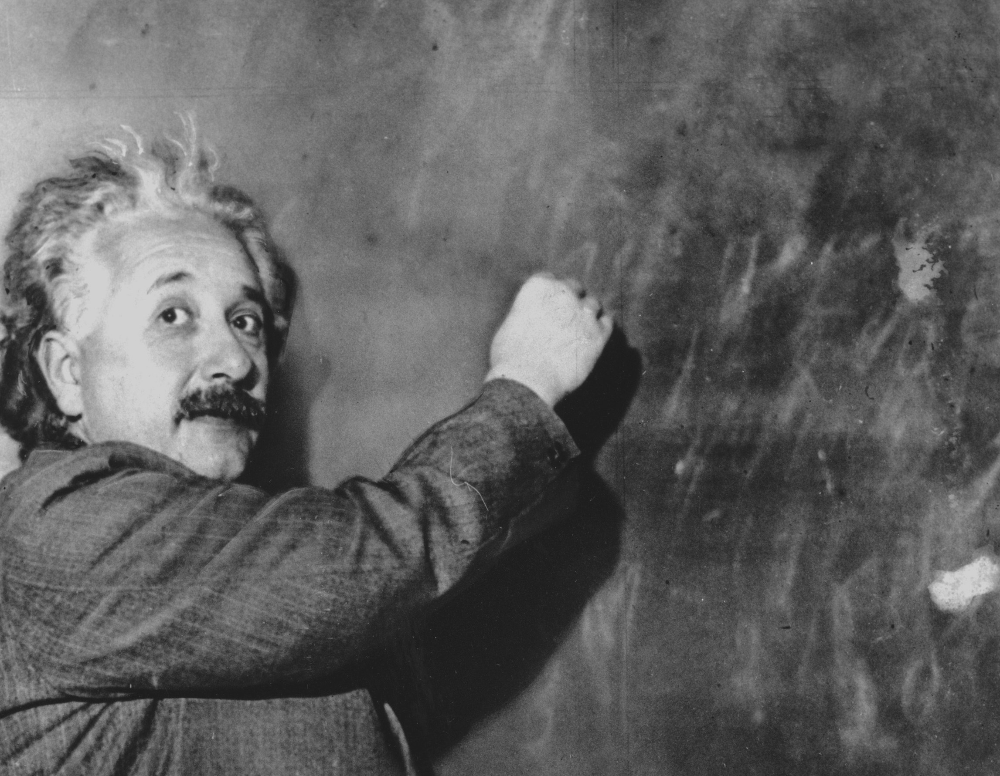
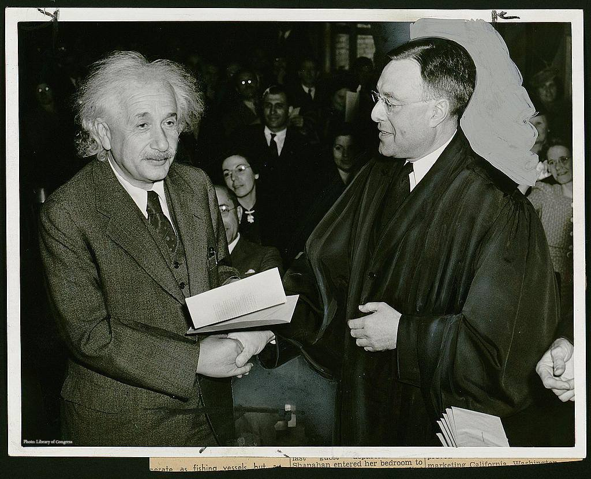
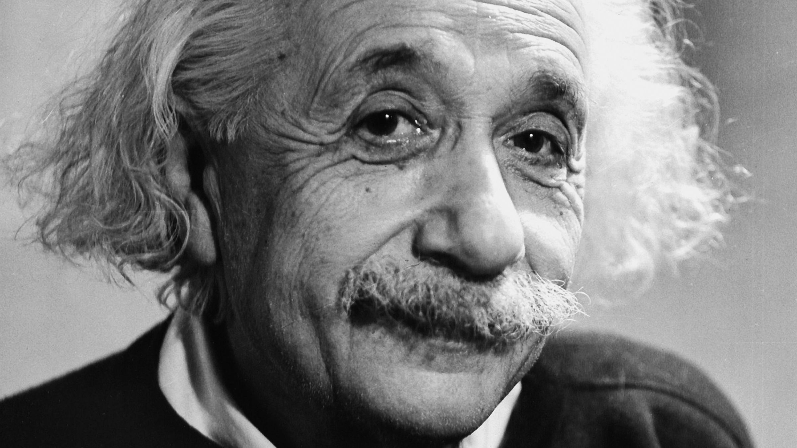
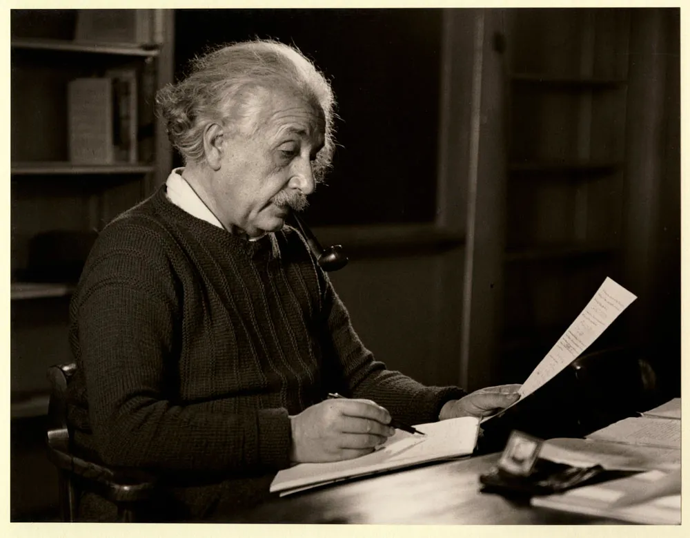
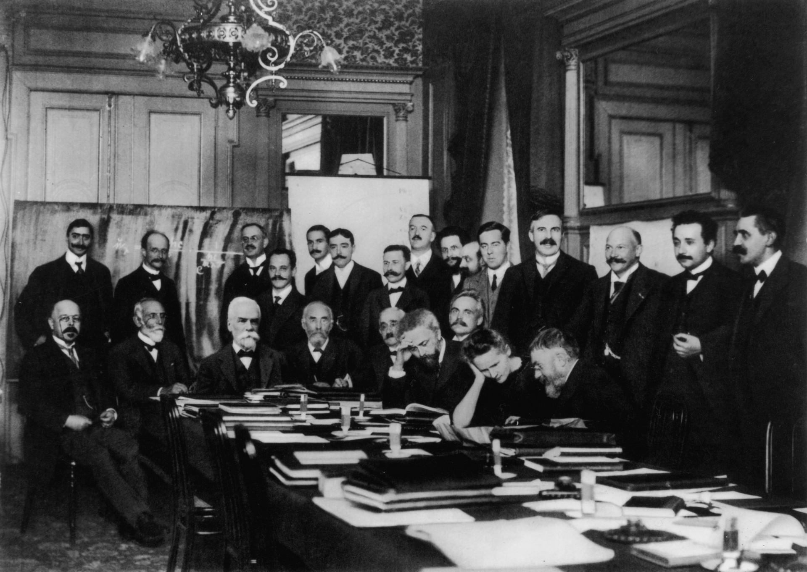
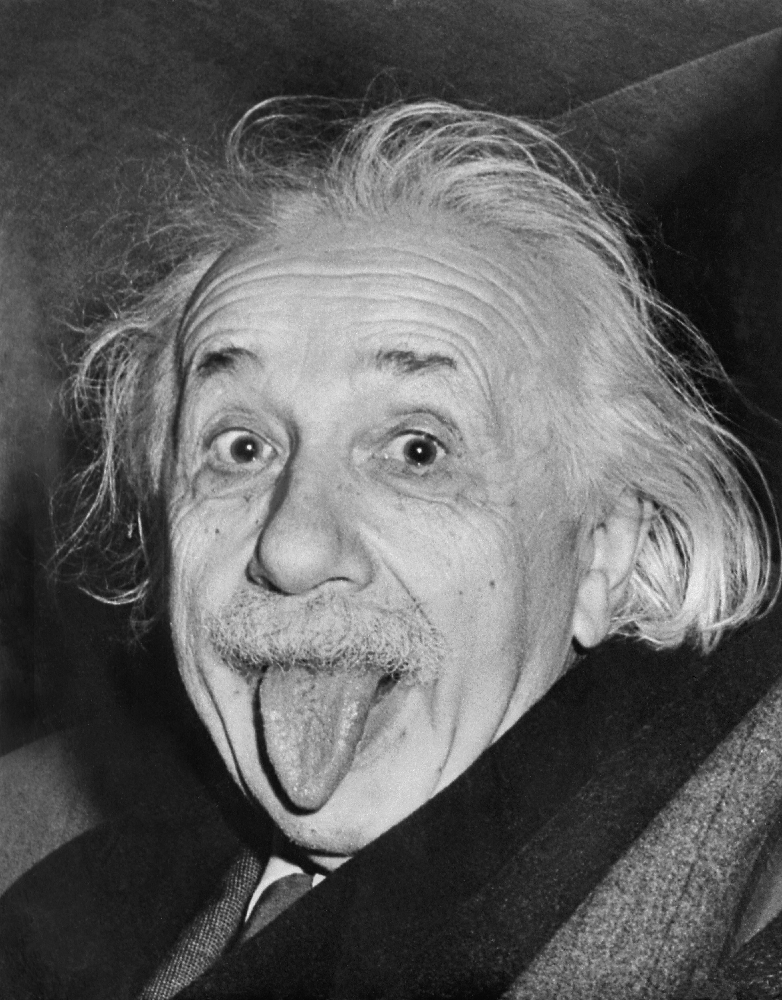
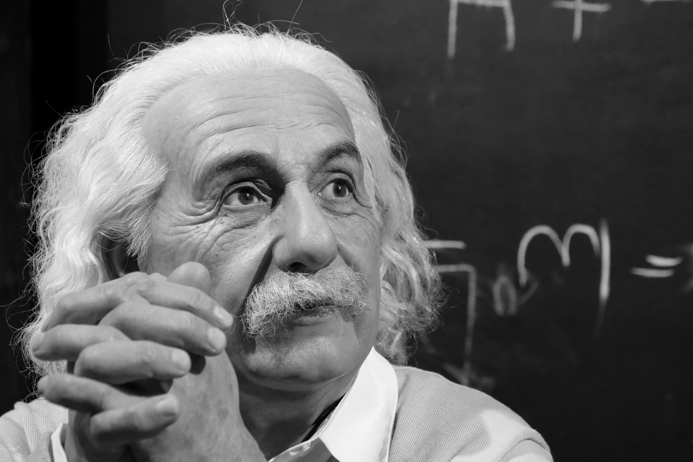
Krátky interaktívny test z života Alberta Einsteina, jeho vedeckej kariéry a fotoelektrického javu. Niektoré otázky môžu mať jednu aj viac správnych odpovedí.
Posledná kapitola tejto webstránky patrí myšlienkam, odkazu a inšpirácii, ktorú Albert Einstein zanechal svetu.
Pamäťová hra. Nájdeš všetky dvojice Einsteinových symbolov? Čím menej ťahov a kratší čas, tým lepší výsledok.
Celú webstránku si môžeš uložiť aj ako PDF dokument vhodný na odovzdanie, tlač alebo archiváciu.